Free energy calculation
Free energies with MBAR
A brief introduction
One of the most relevant uses of molecular dynamics (MD) is the estimation of free energy (FE) changes along a given reaction coordinate. One may be interested in, for example, how favorable the binding of a ligand to a target protein is; or which conformer of a molecule is the most stable. These are the kind of questions that can be addressed with FE techniques.
Through the years, researchers have developed a collection of techniques to solve these problems. As early as 1954, Robert W Zwanzig introduced the FE perturbation method, leading to the Zwanzig equation:
\[\Delta F_{A \rightarrow B} = F_B - F_A = k_B T \ln \left \langle \exp\left( - \frac{E_B - E_A}{k_B T} \right) \right \rangle _A\]
This states that, for a given system, the change of FE in going from state A to state B is equal to the FE difference between the two states and, more importantly, directly related to the total energy difference of states A and B through Botzmann statistics. In this equation, the angle brackets represent the expected value of the Boltzmann-weighted energy difference of the two states, but sampled only from conformations extracted from state A. This implies that, even when sampling only one state, we are able to infer information from the other, given that some niceness criteria is met, i.e. the energy difference between the two states is small enough. This reasoning about unsampled states by re-evaluating sampled states is known as reweighting.
A little over 20 years after Zwanzig introduced FE perturbation, Charles H Bennett expanded on this and developed the Bennett Acceptance Ratio (BAR). Bennett built directly upon the statistical foundation of the Zwanzig equation, and recognized that both forward and reverse energy differences between two states contain complementary information; that is, while Zwanzig’s formulation reweights configurations from a single ensemble to estimate the free energy of another, BAR symmetrizes this process. It combines samples from both states and determines the free energy shift $\Delta F$ that makes each ensemble equally probable under some weighting derived from Boltzmann statistics. In this sense, BAR can be viewed as a generalization of Zwanzig’s exponential averaging, reducing to the Zwanzig equation when only one direction of sampling is available. However, it is because of this that BAR still suffers from the same issue as Zwanzig's reweighting method: the energy difference between states $A$ and $B$ must be small enough such that there is sufficient overlap between their configurational spaces, otherwise the necessary statistics for FE estimation will be very poor and intermediate steps between $A$ and $B$ are needed.
Thus, in 2008 Michael R Shirts and John D Chodera introduced the Multistate Bennett Acceptance Ratio (MBAR) method. MBAR expands on BAR by instead of just using two states A and B, considering a collection of k $\in$ K different thermodynamic states. The only thing that is expected from these states is that they must be sampled from equivalent thermodynamic ensembles, this is, all states should be NVT or NPT, etc.; but other than that, the specific Hamiltonian for each evaluated state can differ in an arbitrary manner. Then, a series of $n_k$ samples are drawn from each thermodynamic state, until a total of $N = \sum_{k}^{K} n_k$ samples are obtained. By evaluating each sample $n \in N$ with each Hamiltonian $\mathcal{H}_{k}; k \in K$, one obtains a matrix of reduced potentials $u_{nk} = \beta_{k} \left[ E_{k}(n)+p_{k}V(n) \right]$. MBAR then solves a set of self-consistent equations that yield the relative free energies $f_k$ of all states simultaneously, using every sample across all simulations to estimate each state’s free energy in a statistically optimal way. In this sense, MBAR generalizes BAR to an arbitrary number of thermodynamic states and provides the maximum-likelihood, minimum-variance estimator for free energies and ensemble averages, efficiently combining data from overlapping simulations into a unified framework. MBAR also allows the reweighting of any observable to a completely unsampled thermodynamic state. Because this themodynamic state is compared to a collection of sampled states, instead of just one, the conformational space between states is much more likely to overlap, therefore increasing the probability of the reweighting to be meaningful.
How to run MBAR with Molly
Defining the restraint interactions
In this example, we will use MBAR to calculate the Potential of Mean Force (PMF) along the central torsion of an alanine dipeptide molecule. In order to do that, we will have to run a series of independent biased simulations, where each will apply an umbrella potential to restrain the peptide torsion fixed around a given angle. We will first define the restraint interaction:

# restraints.jl file
using LinearAlgebra
struct DihedralRestraint{A, K}
ϕ0::A # Radians, dimensionless number
Δϕ::A # Radians, dimensionless number
k::K # Energy (e.g. kJ/mol)
end
# Store angles as plain Float64 radians, k should be energy
function DihedralRestraint(ϕ0::Unitful.AbstractQuantity, Δϕ::Unitful.AbstractQuantity, k)
ϕ0r = ustrip(u"rad", ϕ0)
Δϕr = ustrip(u"rad", Δϕ)
return DihedralRestraint(ϕ0r, Δϕr, k)
endThen, we have to define the potential energy and force functions that Molly will call when it encounters such an interaction. We will make use of the machinery present in Molly and define the restraint as a specific interaction, returning the force as a SpecificForce4Atoms. The functional form used as the bias potential is a quadratic flat bottom angle restraint, using:
\[\varphi^{\prime} = (\varphi - \varphi^0)\ \%\ 2\pi\]
\[V\left( \varphi^{\prime} \right) = \begin{cases} \frac{1}{2} \cdot k \cdot \left( \varphi^{\prime} - \Delta\varphi \right)^2 & \mathrm{for} \ \lvert \varphi^{\prime} \rvert \ge \Delta\varphi \\ 0 & \mathrm{for} \ \lvert \varphi^{\prime} \rvert \lt \Delta\varphi \end{cases}\]
Where $\varphi$ and $\varphi^0$ are the current and reference dihedral angles, respectively; $\Delta\varphi$ is the width of the flat bottom of the potential, and $k$ is the energy constant associated with the interaction. The analytic derivation of the force acting on each atom defining the dihedral, given the previous potential, is quite involved and beyond the scope of this tutorial. We do provide here, however, the Julia code used to define the potential energy and force:
# restraints.jl file
# Robust geometry with clamped inverses
function _dihedral_geom(ci, cj, ck, cl, boundary)
b1 = vector(cj, ci, boundary)
b2 = vector(cj, ck, boundary)
b3 = vector(ck, cl, boundary)
n1 = cross(b1, b2)
n2 = cross(b2, b3)
b2n = norm(b2)
n1n2 = dot(n1, n1)
n2n2 = dot(n2, n2)
# Angle via atan2
y = b2n * dot(b1, n2)
x = dot(n1, n2)
ϕ = atan(y, x)
return ϕ, b1, b2, b3, n1, n2, b2n, n1n2, n2n2, x, y
end
_wrap_pi(x::Real) = (x + π) % (2π) - π # Take into account periodicity
_rad(x::Real) = Float64(x)
_rad(x) = Float64(ustrip(u"rad", x))
function Molly.potential_energy(inter::DihedralRestraint{FT, K},
ci, cj, ck, cl, boundary, args...) where {FT, K}
b1 = vector(cj, ci, boundary)
b2 = vector(cj, ck, boundary)
b3 = vector(ck, cl, boundary)
n1 = cross(b1, b2)
n2 = cross(b2, b3)
b2n = norm(b2)
n1n2 = dot(n1, n1)
n2n2 = dot(n2, n2)
y = b2n * dot(b1, n2)
x = dot(n1, n2)
ϕ = atan(y, x)
# Scale-aware tolerances
Ls = max(ustrip(norm(b1) + norm(b2) + norm(b3)), 1.0) * oneunit(norm(b1))
tol_b = 1e-12 * Ls
tol_xy = 1e-24 * (Ls^4)
if !isfinite(ϕ) || b2n ≤ tol_b || abs(x) ≤ tol_xy || abs(y) ≤ tol_xy ||
sqrt(n1n2) ≤ tol_b^2 || sqrt(n2n2) ≤ tol_b^2
return zero(inter.k)
end
ϕ0 = _rad(inter.ϕ0)
Δ = _rad(inter.Δϕ)
d = _wrap_pi(ϕ - ϕ0)
ad = abs(d)
if ad ≤ Δ
return zero(inter.k)
else
diff = ad - Δ
return FT(inter.k * (diff * diff) / 2)
end
end
function Molly.force(inter::DihedralRestraint{FT, K},
ci, cj, ck, cl, boundary, args...) where {FT, K}
b1 = vector(cj, ci, boundary)
b2 = vector(cj, ck, boundary)
b3 = vector(ck, cl, boundary)
n1 = cross(b1, b2)
n2 = cross(b2, b3)
b2n = norm(b2)
n1n2 = dot(n1, n1)
n2n2 = dot(n2, n2)
y = b2n * dot(b1, n2)
x = dot(n1, n2)
ϕ = atan(y, x)
# Zero force with correct units (energy/length)
F0 = FT(zero(inter.k) / oneunit(norm(b1)))
Fz = SVector(F0, F0, F0)
# Tolerances
Ls = max(ustrip(norm(b1) + norm(b2) + norm(b3)), 1.0) * oneunit(norm(b1))
tol_b = 1e-12 * Ls
tol_xy = 1e-24 * (Ls^4)
if !isfinite(ϕ) || b2n ≤ tol_b || abs(x) ≤ tol_xy || abs(y) ≤ tol_xy ||
sqrt(n1n2) ≤ tol_b^2 || sqrt(n2n2) ≤ tol_b^2
return SpecificForce4Atoms(Fz, Fz, Fz, Fz)
end
ϕ0 = _rad(inter.ϕ0)
Δ = _rad(inter.Δϕ)
d = _wrap_pi(ϕ - ϕ0)
ad = abs(d)
if ad ≤ Δ
return SpecificForce4Atoms(Fz, Fz, Fz, Fz)
end
# dU/dϕ as energy
dU_dϕ = inter.k * (ad - Δ) * (d ≥ 0 ? 1.0 : -1.0)
# Safe inverses
εL4 = 1e-32 * (Ls^4)
εL2 = 1e-32 * (Ls^2)
inv_n1 = 1 / max(n1n2, εL4)
inv_n2 = 1 / max(n2n2, εL4)
b22 = dot(b2, b2)
inv_b22 = 1 / max(b22, εL2)
# Gradients (all ~ 1/L)
g1 = (b2n * inv_n1) * n1
g4 = (b2n * inv_n2) * n2
s1 = dot(b1, b2) * inv_b22
s3 = dot(b3, b2) * inv_b22
g2 = -g1 + s1*g1 - s3*g4
g3 = -g4 + s3*g4 - s1*g1
F1 = -(dU_dϕ) * g1
F2 = -(dU_dϕ) * g2
F3 = -(dU_dϕ) * g3
F4 = -(dU_dϕ) * g4
return SpecificForce4Atoms(FT.(F1), FT.(F2), FT.(F3), FT.(F4))
endSetting up simulations
With this in hand, we are ready to set up the individual biased simulations. We will explore a full torsion around the dihedral, i.e. spanning 360 degrees. We will do so in 60 independent biased simulations, so 360 degrees / 60 simulations = 6 degrees increments per simulation. The system is quite well-behaved, so we can get away with using Float32 precision on GPU. We will use a time step of 1 fs to integrate the equations of motion, and will run the simulations in the NPT ensemble at 310 K and 1 bar of pressure.
# pulling.jl
using Molly
using CUDA
include("restraints.jl")
FT = Float32 # Float precision
AT = CuArray # Array type, run simulations on CUDA GPU
N_WIN = 60 # Number of umbrella windows to generate
dR = FT(6)u"deg" # Increment in CV (torsion angle) in each consecutive window
ΔR = FT(3)u"deg" # Width of flat bottom potential
K_bias = FT(250)u"kJ * mol^-1" # Energy constant for restraint potential
Δt = FT(1)u"fs" # Simulation timestep
T0 = FT(310)u"K" # Simulation temperature
P0 = FT(1)u"bar" # Simulation pessureOne must take into account that the simulations will start from an initial (ideally equilibrated) configuration, and therefore an arbitrarirly imposed restraint may be too far away from the equilibrium distribution of the CV to be biased, causing numerical issues. Thus, we will begin our setup by gently pulling the system along the CV in a series of short, sequential simulations. How short? The answer to that question depends on the system to be simulated; the pulling simulations should be long enough so that the system has time to move towards and stabilize around the imposed biased equilibrium, but also sufficiently short as to not waste time in this initial sequential part, as once each umbrella window is equilibrated it can run in parallel with the rest. For this simple study case, equilibrating each window for 0.5 ns is enough. We can define:
# pulling.jl
tu = unit(Δt) # Time units used for timestep
max_t = uconvert(u, FT(0.5)u"ns") # Simulation time in appropriate time units
N_STEPS = Int(floor(max_t / Δt)) # Number of simulation stepsWe can now load the initial configuration into a System:
# pulling.jl
data_dir = joinpath(dirname(pathof(Molly)), "..", "data")
ff_dir = joinpath(data_dir, "force_fields")
ff = MolecularForceField(
FT,
joinpath.(ff_dir, ["ff99SBildn.xml", "tip3p_standard.xml"])...;
units=true,
)
sys_0 = System(
joinpath(data_dir, "..", "exercises", "dipeptide_equil.pdb"),
ff;
array_type=AT,
nonbonded_method=:cutoff,
)
random_velocities!(sys_0, T0) # Initialize velocities from M-B distribution at target temperatureNow, before starting to produce the pulling simulations, we need to know what is the value of the CV (remember, the torsion angle) for an equilibrated system. We can make use of the functions defined in restraints.jl. Remember to take note of this value, it will be important later!
# pulling.jl
# Indices of the atoms defining the dihedral
i = 17
j = 15
k = 9
l = 7
coords_cpu = Molly.from_device(sys_0.coords)
eq_θ, = _dihedral_geom(coords_cpu[i], coords_cpu[j], coords_cpu[k], coords_cpu[l], sys_0.boundary)
eq_θ = _wrap_pi(eq_θ) # = -0.48948112328583804 radWe are getting very close to running the pulling simulations. The only remaining things to define are the coupling algorithms to keep a constant temperature and pressure, which integrator to use, and also tell Molly every how many integration steps should we write the coordinates to a trajectory file:
# pulling.jl
τ_T = FT(1)u"ps" # Thermostat coupling constant
# Apply thermostat every simulation step, required for Verlet-type integrators
thermostat = VelocityRescaleThermostat(T0, τ_T, n_steps = 1)
τ_P = FT(1)u"ps" # Barostat coupling constant
# Apply barostat 10 times per τ_P, good balance of precision and computational overhead
frac = uconvert(tu, 0.1 * τ_P)
n_P = Int(floor(frac/Δt)) # The number of simulation steps
barostat = CRescaleBarostat(P0, τ_P; n_steps = n_P)
# Create the integrator, remove COM motion every 100 steps
vverlet = VelocityVerlet(Δt, (thermostat, barostat,), 100)
save_t = uconvert(tu, FT(1)u"ps") # Save coordinates every picosecond
save_steps = Int(floor(save_t / Δt)) # The number of simulation stepsWith all of this ready, we only need to sequentially run the pulling simulations. We use the coordinates and velocities at the end of simulation n to seed the beginning of simulation n + 1:
# pulling.jl
old_sys = deepcopy(sys_0) # Get a copy of the initial system
sils = deepcopy(sys_0.specific_inter_lists) # Get the interactions lists of the unbiased system
for w in 1:N_WIN
# Calculate where is the potential well located for a given window
rest_θ = FT(eq_θ - (w-1) * uconvert(u"rad", dR))
# Create the Dihedral restraint given our parameters
dRest = DihedralRestraint(rest_θ*u"rad", uconvert(u"rad", ΔR) , K_bias)
# Pack restraint into an independent interaction list
rest_inter = InteractionList4Atoms(
Molly.to_device([i], AT),
Molly.to_device([j], AT),
Molly.to_device([k], AT),
Molly.to_device([l], AT),
Molly.to_device([dRest], AT),
)
rest_inter = (sils..., rest_inter,) # Merge unbiased and biased into single tuple
sys_w = System(
deepcopy(old_sys); # Get the same layout as the unbiased system
specific_inter_lists=rest_inter, # Overwrite interaction list with the one containing the bias
loggers=(TrajectoryWriter(save_steps, "./pull_$(w).dcd"),),
)
simulate!(sys_w, vverlet, N_STEPS)
# We also write the very last structure to a pdb file
write_structure("./pull_$(w).pdb", sys_w)
global old_sys = sys_w # Override old system with the newly simulated one
endRunning umbrella simulations
Once we have run the pulling, we can write a small standalone script to produce the umbrella sampling simulations. These can be run in parallel as they are independent. The simulation setup must be exactly the same used to produce the pulling, except for the amount of time the simulations will be run for. In our case, each simulation was run for a total of 50 ns:
# individual_simulation.jl
using Molly
using CUDA
include("restraints.jl")
SIM_N = parse(Int, ARGS[1]) # Take the umbrella index as the first argument
FT = Float32 # Float precision
AT = CuArray # Array type, run simulations on CUDA GPU
N_WIN = 60 # Number of umbrella windows to generate
dR = FT(6)u"deg" # Increment in CV (torsion angle) in each consecutive window
ΔR = FT(3)u"deg" # Width of flat bottom potential
K_bias = FT(250)u"kJ * mol^-1" # Energy constant for restraint potential
Δt = FT(1)u"fs" # Simulation timestep
T0 = FT(310)u"K" # Simulation temperature
P0 = FT(1)u"bar" # Simulation pessure
data_dir = joinpath(dirname(pathof(Molly)), "..", "data")
ff_dir = joinpath(data_dir, "force_fields")
ff = MolecularForceField(
FT,
joinpath.(ff_dir, ["ff99SBildn.xml", "tip3p_standard.xml"])...;
units=true,
)
sys = System(
"pull_$(SIM_N).pdb", # Now we load the final structure for a given pull simulation
ff;
array_type=AT,
nonbonded_method=:cutoff,
)
random_velocities!(sys, T0)
# Indices of atoms defining the dihedral
i = 17
j = 15
k = 9
l = 7
eq_θ = FT(-0.48948112328583804) # We get this from the equilibrium structure
tu = unit(Δt) # Time units used for timestep
max_t = uconvert(u, FT(50)u"ns") # Simulation time in appropriate time units
N_STEPS = Int(floor(max_t / Δt)) # Number of simulation steps
τ_T = FT(1)u"ps" # Thermostat coupling constant
thermostat = VelocityRescaleThermostat(T0, τ_T, n_steps=1) # Apply thermostat every simulation step
τ_P = FT(1)u"ps" # Barostat coupling constant
frac = uconvert(tu, 0.1 * τ_P) # Apply barostat 10 times per τ_P, good balance of precision and computational overhead
n_P = Int(floor(frac/Δt)) # To number of simulation steps
barostat = CRescaleBarostat(P0, τ_P; n_steps=n_P)
vverlet = VelocityVerlet(Δt, (thermostat, barostat,), 100) # Create the integrator, remove COM motion every 100 steps
save_t = uconvert(tu, FT(1)u"ps") # Save coordinates every picosecond
save_steps = Int(floor(save_t / Δt)) # To number of simulation steps
rest_θ = FT(eq_θ - (SIM_N-1) * uconvert(u"rad", dR)) # The equilibrium value for the bias
dRest = DihedralRestraint(rest_θ*u"rad", uconvert(u"rad", ΔR) , K_bias) # Create interaction
# Pack into interaction list
rest_inter = InteractionList4Atoms(
Molly.to_device([i], AT),
Molly.to_device([j], AT),
Molly.to_device([k], AT),
Molly.to_device([l], AT),
Molly.to_device([dRest], AT),
)
sils = deepcopy(sys.specific_inter_lists) # Unbiased
rest_inter = (sils..., rest_inter,) # Merge biased and unbiased
sys = System(
deepcopy(sys); # Everything from the unbiased system
specific_inter_lists=rest_inter, # Overwrite specific interactions
loggers=(trj=TrajectoryWriter(save_steps, "./umbrella_$(SIM_N).dcd"),),
)
simulate!(sys, vverlet, N_STEPS)Calculating free energies with MBAR
Once all of the individual umbrella simulations are finished, we are ready to run MBAR on the results and estimate the free energy along our reaction coordinate. Remember from the first section of this tutorial that the MBAR equations are solved by evaluating every generated conformation with every used Hamiltonian. It follows, then, that we will first have to set up an array of System structs that represent each Hamiltonian. Moreover, we will be reading data from trajectories, so those Systems will actually be wrapped inside EnsembleSystem structs, which allow IO operations from trajectory files into data structures usable by Molly.
We start by defining variables that will be shared by all thermodynamic states. Notice how many things are shared with the parameters used to produce the simulations!
# MBAR.jl
using Molly
using CUDA
include("restraints.jl")
AT = CuArray
FT = Float32
# Bias parameters
dR = FT(6)u"deg" # Increment of CV in each umbrella window
ΔR = FT(3)u"deg" # Width for flat bottom potential
K_bias = FT(250)u"kJ * mol^-1" # Force used in the restraint
temp = FT(310)u"K"
pres = FT(1)u"bar"
data_dir = joinpath(dirname(pathof(Molly)), "..", "data")
ff_dir = joinpath(data_dir, "force_fields")
trajs_dir = "./" # Or wherever you have saved the umbrella simulations
ff = MolecularForceField(
FT,
joinpath.(ff_dir, ["ff99SBildn.xml", "tip3p_standard.xml"])...;
units=true,
)
sys_nobias = System(
joinpath(data_dir, "..", "exercises", "dipeptide_equil.pdb"),
ff;
array_type=AT,
nonbonded_method=:cutoff,
)
# Atom indices defining dihedral
i = 17
j = 15
k = 9
l = 7
eq_θ = FT(-0.48948112328583804) # We get this from the equilibrium structure
N_TRJ = 60 # The number of umbrella simulations produced
TRJ_SYSTEMS = Vector{EnsembleSystem}(undef, N_TRJ)
Threads.@threads for trj_n in 1:N_TRJ
traj_path = joinpath(trajs_dir, "umbrella_$(trj_n).dcd")
# Note that the restraint and specific interactions list must be created
# in exactly the same way as for the umbrella simulations, we need exactly
# the same Hamiltonian
rest_θ = FT(eq_θ - (trj_n-1) * uconvert(u"rad", dR))
dRest = DihedralRestraint(rest_θ*u"rad", uconvert(u"rad", ΔR) , K_bias)
rest_inter = InteractionList4Atoms(
Molly.to_device([i], AT),
Molly.to_device([j], AT),
Molly.to_device([k], AT),
Molly.to_device([l], AT),
Molly.to_device([dRest], AT),
)
sils = deepcopy(sys_nobias.specific_inter_lists)
rest_sils = (sils..., rest_inter,)
sys_rest = System(sys_nobias; specific_inter_lists=rest_sils)
# Store in struct that allows reading trajectories
sys_trj = EnsembleSystem(sys_rest, traj_path)
TRJ_SYSTEMS[trj_n] = sys_trj
endWe now have a vector of structs that represent each system and its trajectory. The next step is to read the trajectories and sample the relevant magnitudes to solve MBAR and get our PMF. We will need the coordinates, the system boundaries (needed to calculate the volume for the $pV$ terms of the Hamiltonian, as we have run the simulations in the NPT ensemble) and, of course, the CV of interest. Note that MBAR assumes statistical independence of samples, so the selected conformations must be subsampled from decorrelated states. Molly does provide the functionality to estimate the statistical inefficiency of a given timeseries and subsequent subsampling.
# MBAR.jl
C = Vector{<:Any}(undef, N_TRJ) # Vector to store coordinates
B = Vector{<:Any}(undef, N_TRJ) # Vector to store boundaries
CV = Vector{<:Any}(undef, N_TRJ) # Vector to store the CV
# We discard the first 12500 frames (12.5 ns), assume system is still equilibrating there
FIRST_IDX = 12_500
Threads.@threads for nt in 1:N_TRJ
trjsys = TRJ_SYSTEMS[nt]
n_frames = Int(length(trjsys.trajectory))
# Temp arrays to store potential energy, coordinates, boundaries and CV
u, c, b, cv = [], [], [], []
# Iterate over trajectory frames
for n in FIRST_IDX:n_frames
current_sys = read_frame!(trjsys, n) # Read the current frame as a System
pe = potential_energy(current_sys)
coords = Molly.from_device(current_sys.coords)
boundary = current_sys.boundary
# Measure the CV at the current frame
ϕ = _dihedral_geom(coords[i], coords[j], coords[k], coords[l], boundary)
push!(u, pe)
push!(c, coords)
push!(b, boundary)
push!(cv, ϕ*u"rad")
end
# Estimate the decorrelation time from the timeseries of the potential energy
ineff = Molly.statistical_inefficiency(u; maxlag=n_frames-1)
# Subsample arrays based on statistical inefficiency
sub_coords = Molly.subsample(c, ineff.stride; first=1)
sub_bounds = Molly.subsample(b, ineff.stride; first=1)
sub_CV = Molly.subsample(cv, ineff.stride; first=1)
C[nt] = sub_coords
B[nt] = sub_bounds
CV[nt] = sub_CV
endNext, we define a vector of thermodynamic states to represent each Hamiltonian used to produce the simulations, as well a single state that represents the system in the absence of bias potentials. We will use the ThermoState struct provided by Molly:
# MBAR.jl
# Assemble the thermodynamic systems for each umbrella window
energy_units = TRJ_SYSTEMS[1].system.energy_units
kBT = uconvert(energy_units, Unitful.R * temp)
βi = Float64(ustrip(1.0 / kBT))
states = ThermoState[ThermoState("win_$i", βi, pres, TRJ_SYSTEMS[i].system)
for i in eachindex(TRJ_SYSTEMS)]
target_state = ThermoState("target", βi, pres, sys_nobias)We are finally in possession of everything needed to solve the MBAR equations and estimate the PMF along our CV! There are two paths we can take for this, the long path and the short path. For the sake of completeness, we describe the long path first. The first step for solving MBAR is assembling the reduced energy matrix. Molly provides a functionality just for that through the assemble_mbar_inputs method:
# MBAR.jl
mbar_gen = assemble_mbar_inputs(
C, B, states; # Coordinates, boundaries and thermodynamic states
target_state=target_state, # The target state, in our case the unbiased system
energy_units=energy_units,
)
u = mbar_gen.u # Reduced energy matrix, K states by N sampled conformations
u_target = mbar_gen.u_target # The reduced energy of the N samples evaluated by the target state hamiltonian
N_counts = mbar_gen.N # Number of sampled conformations
win_of = mbar_gen.win_of # Indexing helper that tells which k state was used to generate each n sample
shifts = mbar_gen.shifts # Numerical shifts, if used, for stability reasons when building the reduced energy matrixThis generates the necessary inputs to use the self-consistent iteration method to solve the MBAR equations. Of course, Molly provides the iterate_mbar method to do so:
# MBAR.jl
# Returns the relative free energy of each k state and log.(N_counts), needed for downstream computations
F_k, logN = iterate_mbar(u, win_of, N_counts)With this, we can also produce a weight matrix and a vector of target weights, using the mbar_weights method, that will let us reweight any arbitrary quantity from the sampled K thermodynamic states to any target state:
# MBAR.jl
# Returns the weights matrix and the target weights
W_s, w_target = mbar_weights(u, u_target, F_k, logN, N_counts; check=true, shifts=shifts)And finally, we can estimate the PMF using the output of the previous step by calling the pmf_with_uncertainty method:
# MBAR.jl
pmf_result = pmf_with_uncertainty(u, u_target, F_k, N_counts, logN, CV; shifts=shifts, kBT=kBT)
centers = pmf_result.centers # The collective variable
PMF = pmf_result.F # PMF in kBT
PMF_enr = pmf_result.F_energy # PMF in energy units
sigma = pmf_result.sigma_F # Standard deviation in kBT
sigma_enr = pmf_result.sigma_F_energy # Standard deviation in energy unitsBut what about the short path? Well, we also provide an overload of the pmf_with_uncertainty method that allows to get the PMF in a single call by doing:
# MBAR.jl
pmf_result = pmf_with_uncertainty(
C, # Coordinates
B, # Boundaries
states, # Themodynamic states
target_state, # Target state
CV, # Collective variable
)Now one can put this into a graph, for example using a scatter for the free energy and making use of the calculated sigmas (see the previous code blocks) to shade the plot and give a feel for the uncertainties. The code is left as an exercise to the reader, but the results should look like something similar to this:


Free energies with AWH
Method overview
The Accelerated Weight Histogram (AWH) is an adaptive extended-ensemble method for estimating free energies over a discrete set of thermodynamic states where the thermodynamic-state index is treated as a dynamic variable. At each AWH iteration, the coordinates are propagated with the Hamiltonian of the active state, the current configuration is evaluated in all states, and a new active state is sampled from the conditional state probabilities.
For a target distribution $\rho_k$, current free energy estimate $f_k$, and reduced potential $u_k(x)$, the conditional weight of state $k$ is
\[\omega_k(x) = \frac{\exp\left(f_k + \log \rho_k - u_k(x)\right)} {\sum_j \exp\left(f_j + \log \rho_j - u_j(x)\right)}.\]
The same weights are accumulated into a segment histogram. After update_freq samples, Molly updates the free energy estimate from the segment histogram and an effective reference count. During the initial stage, the reference count is controlled by n_bias, so smaller values give more aggressive updates. After the state space has been covered, the effective count grows with simulation time and the updates become smaller.
The examples in this section show two common uses. The alanine dipeptide example uses AWH to move between umbrella centers on a two-dimensional $\phi/\psi$ grid, then deconvolves the umbrella bias to obtain an unbiased PMF. The ethanol solvation example uses AWH directly on a one-dimensional alchemical ladder, where the AWH free energy vector is the alchemical profile.
Alanine dipeptide PMF
The full script is scripts/awh_dipeptide.jl. Run it from the package root:
julia scripts/awh_dipeptide.jlThe script uses CUDA arrays and selects GPU 0 by default. Set MOLLY_CUDA_DEVICE before launching Julia to choose a different device.
The system is the alanine dipeptide structure from the Molly exercises. The script minimizes it, assigns Maxwell-Boltzmann velocities, and equilibrates it at 310 K and 1 bar before constructing the AWH states.
using Molly
using CUDA
using GLMakie
using Random
CUDA.device!(parse(Int, get(ENV, "MOLLY_CUDA_DEVICE", "0")))
FT = Float32
AT = CuArray
DT = FT(4)u"fs"
TEMP = FT(310)u"K"
PRES = one(FT)u"bar"
thermostat = VelocityRescaleThermostat(TEMP, FT(0.1)u"ps"; n_steps = 1)
barostat = CRescaleBarostat(PRES, FT(4)u"ps"; n_steps = 100)
vverlet = VelocityVerlet(DT, (thermostat, barostat), 100)The PMF is defined over the central $\phi$ and $\psi$ torsions. In this example each angle is divided into 20 periodic bins, giving 400 umbrella centers. Each AWH state is a copy of the equilibrated system with one flat-bottom torsion bias on $\phi$ and one on $\psi$.
PHI_INDS = [5, 7, 9, 15]
PSI_INDS = [7, 9, 15, 17]
PHI_CV = CalcTorsion(PHI_INDS, :pbc, true)
PSI_CV = CalcTorsion(PSI_INDS, :pbc, true)
N_PHI_STATES = 20
N_PSI_STATES = 20
PHI_MIN = FT(-π)
PHI_MAX = FT(π)
PSI_MIN = FT(-π)
PSI_MAX = FT(π)
FLAT_BOTTOM_WIDTH = ustrip(u"rad", FT(360 / N_PHI_STATES)u"°")
BIAS_K = FT(100.0)u"kJ * mol^-1"
PHI_TARGETS = collect(range(PHI_MIN, PHI_MAX; length=N_PHI_STATES + 1))[1:end-1]
PSI_TARGETS = collect(range(PSI_MIN, PSI_MAX; length=N_PSI_STATES + 1))[1:end-1]
thermo_states = ThermoState[]
for psi in PSI_TARGETS
for phi in PHI_TARGETS
bias_phi = PeriodicFlatBottomBias(BIAS_K, FLAT_BOTTOM_WIDTH, phi)
bias_psi = PeriodicFlatBottomBias(BIAS_K, FLAT_BOTTOM_WIDTH, psi)
sys_bias = System(
deepcopy(sys);
general_inters = (
sys.general_inters...,
BiasPotential(PHI_CV, bias_phi),
BiasPotential(PSI_CV, bias_psi),
),
)
push!(thermo_states, ThermoState(sys_bias, vverlet))
end
endThe AWH state index labels biased thermodynamic states, not the unbiased PMF bins. For this reason, the raw AWH free energies are not used directly as the Ramachandran free energy surface. Instead, the script attaches a PMFDeconvolution object to the simulation.
Here the automatic deconvolution path is safe because every thermodynamic state has exactly two BiasPotentials in general_inters, and they are appended in the same order as the PMF grid dimensions: first the $\phi$ bias, then the $\psi$ bias. PMFDeconvolution can therefore infer both the collective variables and the reduced bias-energy coupling matrix from the states themselves.
awh_state = AWHState(thermo_states; first_state = 1, n_bias = 100, reuse_neighbors = true)
pmf_deconv = PMFDeconvolution(
awh_state;
grid = ((PHI_MIN, PSI_MIN), (PHI_MAX, PSI_MAX), (N_PHI_STATES, N_PSI_STATES)),
)Do not use the automatic path if:
- The state contains extra
BiasPotentials that are not PMF windows. - The bias order does not match the PMF grid axes.
- More than one bias contributes to one PMF dimension.
- The coordinate used for the plotted PMF is transformed differently from the coordinate seen by the bias.
In those cases, provide the collective-variable function and the reduced coupling explicitly. For example, if an extra flat-bottom restraint were also stored in general_inters, the PMF deconvolution would need to ignore it:
GRID_CARTESIAN = CartesianIndices((N_PHI_STATES, N_PSI_STATES))
function torsion_value(coords, sys, cv)
return FT(ustrip(calculate_cv(cv, coords, sys.atoms, sys.boundary, sys.velocities)))
end
function custom_pmf_cv(coords)
active_sys = awh_state.active_sys
return (
torsion_value(coords, active_sys, PHI_CV),
torsion_value(coords, active_sys, PSI_CV),
)
end
function custom_pmf_coupling(cv_tuple, state_i)
grid_i = GRID_CARTESIAN[state_i]
bias_phi = PeriodicFlatBottomBias(BIAS_K, FLAT_BOTTOM_WIDTH, PHI_TARGETS[grid_i[1]])
bias_psi = PeriodicFlatBottomBias(BIAS_K, FLAT_BOTTOM_WIDTH, PSI_TARGETS[grid_i[2]])
bias_energy = potential_energy(bias_phi, FT(cv_tuple[1])) +
potential_energy(bias_psi, FT(cv_tuple[2]))
return awh_state.λ_β[state_i] * FT(ustrip(bias_energy))
end
pmf_deconv = PMFDeconvolution(
awh_state;
grid = ((PHI_MIN, PSI_MIN), (PHI_MAX, PSI_MAX), (N_PHI_STATES, N_PSI_STATES)),
cv = custom_pmf_cv,
coupling = custom_pmf_coupling,
)The simulation advances 50 MD steps per AWH iteration. The finite well_tempered_factor lets the target distribution adapt during the run, favoring lower-free-energy regions while still keeping all windows accessible. Higher values soften this behaviour.
N_MD_STEPS = 50
AWH_TIME = FT(25)u"ns"
TOTAL_STEPS = Int(floor(AWH_TIME / DT))
awh_sim = AWHSimulation(
awh_state;
num_md_steps = N_MD_STEPS,
update_freq = 1,
well_tempered_factor = FT(500.0),
log_freq = 10,
pmf = pmf_deconv,
)
simulate!(awh_sim, TOTAL_STEPS)AWHSimulation stores its absolute MD step, so couplers and loggers retain their cadence across AWH iterations and repeated simulate! calls. Pass initial_step when resuming from a checkpoint whose coordinates and velocities already correspond to a nonzero step.
After the run, pmf(awh_sim.pmf) returns the deconvolved PMF in units of $k_B T$ by default. Infinite bins are converted to NaN before plotting so GLMakie can render regions with low statistical support in a separate color. The script plots the deconvolved PMF as a heatmap and adds a colorbar for the free energy scale.
pmf_result = pmf(awh_sim.pmf)
pmf_kbt = pmf_result.F
pmf_plot = map(x -> isfinite(x) ? x : FT(NaN), pmf_kbt)
fig_fe = Figure(size = (720, 720))
ax_fe = Axis(fig_fe[1,1],
title = L"\textbf{Free Energy}",
xlabel = L"\textbf{\phi / rad}",
ylabel = L"\textbf{\psi / rad}",
xlabelsize = 20, ylabelsize = 20,
titlesize = 24,
xlabelfont = :bold, ylabelfont = :bold,
xticklabelsize = 18, yticklabelsize = 18,
)
hm_fe = heatmap!(
ax_fe,
PHI_TARGETS,
PSI_TARGETS,
pmf_plot;
colormap = :inferno,
nan_color = (:gray, 0.35),
)
Colorbar(
fig_fe[1, 2],
hm_fe;
label = L"\textbf{F / k_{B}T}",
labelsize = 20,
ticklabelsize = 16,
)
ax_fe.aspect = DataAspect()
display(fig_fe)
save("awh_dipeptide_pmf.png", fig_fe)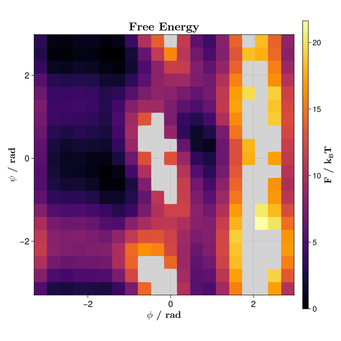
The convergence plot uses the maximum absolute free energy update recorded by AWH at each logged iteration. A decreasing log10.(deltaF) trace indicates that the adaptive bias updates are becoming smaller.
deltaF = awh_state.stats.max_delta_f_history
iter = awh_state.stats.step_indices
fig_df = Figure(size = (720, 720))
ax_df = Axis(
fig_df[1,1],
title = L"\textbf{Max. $\Delta$F}",
xlabel = L"\textbf{Iteration}",
ylabel = L"\textbf{log_{10}($\Delta$F)}",
xlabelsize = 20, ylabelsize = 20,
titlesize = 24,
xlabelfont = :bold, ylabelfont = :bold,
xticklabelsize = 18, yticklabelsize = 18,
)
lines!(
ax_df,
iter,
log10.(deltaF);
color = :royalblue,
linewidth = 3,
linecap = :round,
joinstyle = :round,
label = "PHI/PSI AWH",
)
axislegend(position = :rt, labelsize = 24)
display(fig_df)
save("awh_dipeptide_convergence.png", fig_df)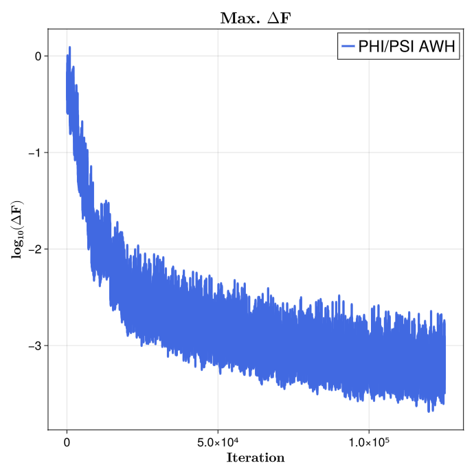
The script also saves a normalized histogram of the visited AWH thermodynamic states. This is a simple diagnostic for how the sampler moved over the 400 biased $\phi/\psi$ windows.
state_bins = 0.5:1:(N_PHI_STATES * N_PSI_STATES + 0.5)
save_state_histogram(
awh_visited_states(awh_state),
state_bins,
"awh_dipeptide_states.png",
)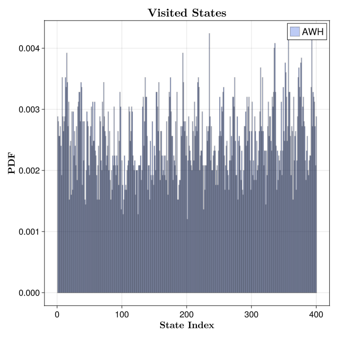
Ethanol solvation free energy
The full script can be found in scripts/awh_solvation.jl:
julia scripts/awh_solvation.jlThe example computes the standard solvation free energy of ethanol with a two-leg annihilation cycle. Ethanol is annihilated, that is, its non-bonded interactions switched off, in solution and in vacuum. The standard solvation free energy is then described by the cycle:
\[\Delta G_\mathrm{solvation} = \Delta G_\mathrm{vacuum} - \Delta G_\mathrm{solvent} + k_B T \log\left(\frac{V_\mathrm{gas}}{V_\mathrm{std}}\right).\]
where the last term captures the free energy of taking a molecule from a gas to a standard state solution. The alchemical ladder has 20 states from $\lambda=1$ (solute fully turned on) to $\lambda=0$ (solute fully turned off). The solute atoms are assigned InsertRole, and DefaultLambdaScheduler removes electrostatics over the first half of the ladder and sterics over the second half.
FT = Float32
AT = CuArray
Δt = FT(4)u"fs"
T0 = FT(310)u"K"
P0 = FT(1)u"bar"
N_LAMBDA_STATES = 20
N_MD_STEPS = 50
AWH_TIME = FT(15)u"ns"
SOLVENT_EQUIL_TIME = FT(500)u"ps"
VACUUM_EQUIL_TIME = FT(100)u"ps"
lambda_schedule = FT.(range(1.0, stop = 0.0, length = N_LAMBDA_STATES))The setup function builds either the solvated or vacuum leg. The solvated leg uses PME and a Langevin integrator coupled to an NPT barostat. The vacuum leg uses short-range Coulomb with an infinite boundary and infinite non-bonded cutoff so the ethanol molecule is not split by a finite cutoff.
function setup_alchemical_awh(pdb_file, solute_indices; is_vacuum = false, rng = Random.default_rng())
nonbonded_method = is_vacuum ? :none : :pme
boundary = is_vacuum ? CubicBoundary(FT(Inf) * u"nm") : nothing
dist_cutoff = is_vacuum ? FT(Inf) * u"nm" : FT(1) * u"nm"
dist_buffer = is_vacuum ? FT(0) * u"nm" : FT(0.2) * u"nm"
neighbor_finder_type = is_vacuum ? DistanceNeighborFinder : nothing
sys_base = System(
pdb_file,
ff;
array_type = AT,
boundary = boundary,
dist_cutoff = dist_cutoff,
dist_buffer = dist_buffer,
neighbor_finder_type = neighbor_finder_type,
nonbonded_method = nonbonded_method,
constraints = :hbonds,
constraint_algorithm = LINCS,
rigid_water = true,
hydrogen_mass = 3,
)
integrator = if is_vacuum
Langevin(; dt = Δt, temperature = T0, friction = FT(1)u"ps^-1",
coupling = nothing, remove_CM_motion = 100)
else
barostat = CRescaleBarostat(P0, FT(4)u"ps"; n_steps = 200)
Langevin(dt = Δt, temperature = T0, friction = FT(1)u"ps^-1",
coupling = (barostat,), remove_CM_motion = 100)
endWhen running simulations in which some of the atoms are achemicaly decoupled from the system some care must be taken with the integrator of choice. Decoupling atoms can make them incredibly fast, which will appear as a huge contribution to the kinetic energy tensor. Therefore any temperature calculation that depends on said tensor will be prone to errors, since one could argue that a fully decoupled set of atoms should not contribute to the overall temperature of the system.
Therefore, and since Molly currently does not yet support temperature groups, the recommended way of integrating this kind of system is by using a Langevin scheme, instead of a VelocityVerlet integrator accompanied by a VelocityRescaleThermostat temperature coupling scheme; specially when using large integration timesteps.
Note that the Langevin integrator is known to produce incorrect kinetics, but since free energies are an ensemble average property this issue can be safely ignored.
After minimization and equilibration, the script replaces the standard Lennard-Jones interaction with a Gapsys soft-core variant, replaces the Coulomb interaction with a scaled alchemical interaction, rebuilds PME and Ewald exclusion data with the same scheduler, and creates one ThermoState per $\lambda$ value.
p_inters = sys_base.pairwise_inters
idx_lj = findfirst(x -> x isa LennardJones, p_inters)
idx_coul = findfirst(x -> x isa Union{Coulomb, CoulombEwald}, p_inters)
lj_sc = alchemical_lj_softcore(p_inters[idx_lj])
cl_scaled = alchemical_coulomb_scaled(p_inters[idx_coul])
atoms_cpu = Molly.from_device(sys_base.atoms)
thermo_states = ThermoState[]
for λ in lambda_schedule
acopy = Atom[]
for a in atoms_cpu
if a.index ∈ solute_indices
push!(acopy, Atom(a.index, a.atom_type, a.mass, a.charge,
a.σ, a.ϵ, FT(λ), Molly.InsertRole))
else
push!(acopy, Atom(a.index, a.atom_type, a.mass, a.charge,
a.σ, a.ϵ, FT(a.λ), a.alch_role))
end
end
atoms_dev = Molly.to_device([acopy...], AT)
general_inters = rebuild_alchemical_general_inters(
sys_base,
atoms_dev,
lj_sc,
cl_scaled,
)
specific_inter_lists = rebuild_alchemical_specific_inter_lists(sys_base, cl_scaled)
sys_w = System(
deepcopy(sys_base);
atoms = atoms_dev,
pairwise_inters = (lj_sc, cl_scaled),
general_inters = general_inters,
specific_inter_lists = specific_inter_lists,
)
push!(thermo_states, ThermoState(sys_w, deepcopy(integrator)))
endFor an alchemical ladder, no PMF deconvolution is needed: the state coordinate already is the alchemical coordinate. The script disables the well-tempered target adaptation with well_tempered_factor = Inf, so AWH samples a fixed uniform target over the ladder.
awh_state = AWHState(thermo_states; reuse_neighbors = true)
awh_sim = AWHSimulation(
awh_state;
num_md_steps = N_MD_STEPS,
update_freq = 1,
well_tempered_factor = FT(Inf),
log_freq = 10,
)
return awh_state, awh_sim
endThe two legs are run independently. The free energy profile is stored in awh_state.f, gauge-fixed so the first state is zero.
solute_idx = 1:9
awh_state_solv, awh_sim_solv = setup_alchemical_awh(
joinpath(data_dir, "ethanol_solv.pdb"),
solute_idx;
is_vacuum = false,
rng = MersenneTwister(RNG_SEED),
)
awh_state_vac, awh_sim_vac = setup_alchemical_awh(
joinpath(data_dir, "ethanol_vac.pdb"),
solute_idx;
is_vacuum = true,
rng = MersenneTwister(RNG_SEED + 1),
)
awh_steps = Int(floor(AWH_TIME / Δt))
simulate!(awh_sim_solv, awh_steps)
simulate!(awh_sim_vac, awh_steps)
f_solv = awh_state_solv.f
f_vac = awh_state_vac.fThe script reverses both the $\lambda$ schedule and the free energy vectors before plotting, so $\lambda=0$ is on the left and $\lambda=1$ is on the right.
lambda_plot = reverse(lambda_schedule)
f_solv_plot = reverse(f_solv)
f_vac_plot = reverse(f_vac)
fig_fe = Figure(size = (720, 720))
ax_fe = Axis(fig_fe[1,1],
title = L"\textbf{Alchemical Free Energy}",
xlabel = L"\textbf{\lambda}",
ylabel = L"\textbf{F / k_{B}T}",
xlabelsize = 20, ylabelsize = 20,
titlesize = 24,
xlabelfont = :bold, ylabelfont = :bold,
xticklabelsize = 18, yticklabelsize = 18,
)
lines!(
ax_fe,
lambda_plot, f_solv_plot;
color = :royalblue,
linewidth = 3,
linecap = :round,
joinstyle = :round,
label = "Solvated",
)
lines!(
ax_fe,
lambda_plot, f_vac_plot;
color = :firebrick,
linewidth = 3,
linecap = :round,
joinstyle = :round,
label = "Vacuum",
)
axislegend(position = :rt, labelsize = 24)
display(fig_fe)
save("awh_solvation_profile.png", fig_fe)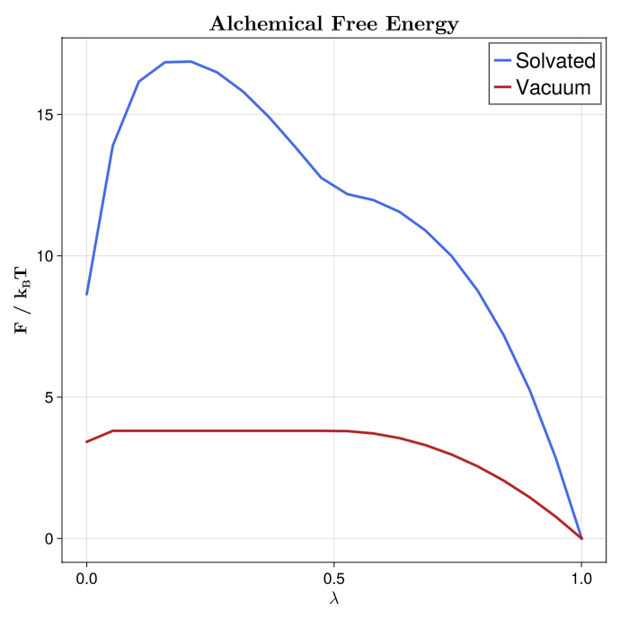
It also plots the maximum free energy update at each logged AWH iteration.
deltaF_solv = awh_state_solv.stats.max_delta_f_history
deltaF_vac = awh_state_vac.stats.max_delta_f_history
iter_solv = awh_state_solv.stats.step_indices
iter_vac = awh_state_vac.stats.step_indices
fig_df = Figure(size = (720, 720))
ax_df = Axis(
fig_df[1,1],
title = L"\textbf{Max. $\Delta$F}",
xlabel = L"\textbf{Iteration}",
ylabel = L"\textbf{log_{10}($\Delta$F)}",
xlabelsize = 20, ylabelsize = 20,
titlesize = 24,
xlabelfont = :bold, ylabelfont = :bold,
xticklabelsize = 18, yticklabelsize = 18,
)
lines!(
ax_df,
iter_solv, log10.(deltaF_solv);
color = :royalblue,
linewidth = 3,
linecap = :round,
joinstyle = :round,
label = "Solvated",
)
lines!(
ax_df,
iter_vac, log10.(deltaF_vac);
color = :firebrick,
linewidth = 3,
linecap = :round,
joinstyle = :round,
label = "Vacuum",
)
axislegend(position = :rt, labelsize = 24)
display(fig_df)
save("awh_solvation_convergence.png", fig_df)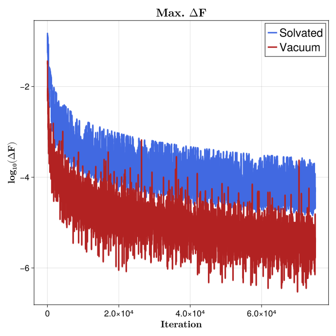
The visited-state histogram is plotted for the solvent and vacuum legs on the same axes. The state index follows the original $\lambda$ schedule, from $\lambda=1$ at state 1 to $\lambda=0$ at state 20.
state_bins = 0.5:1:(N_LAMBDA_STATES + 0.5)
save_state_histogram(
[awh_visited_states(awh_state_solv), awh_visited_states(awh_state_vac)],
["Solvated", "Vacuum"],
state_bins,
"awh_solvation_states.png",
)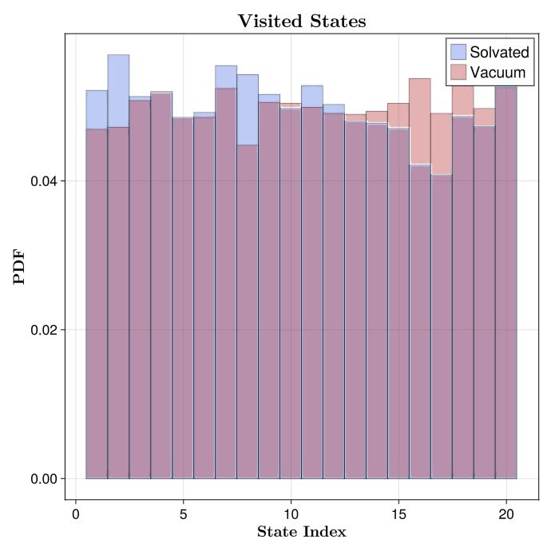
Finally, the endpoint differences and the standard-state correction are combined and printed in both $k_B T$ and kJ mol^-1.
dG_solv = f_solv[end] - f_solv[1]
dG_vac = f_vac[end] - f_vac[1]
V_gas = ustrip(u"nm^3", Unitful.k * T0 / P0)
V_std = ustrip(u"nm^3", 1.0u"L" / (1.0u"mol" * Unitful.Na))
dG_std_corr = log(V_gas / V_std)
dG = dG_vac - dG_solv + dG_std_corr
beta = awh_state_solv.state_space.betas[1]
println("=========================================")
println("Annihilation in solvent (kBT): ", dG_solv)
println("Annihilation in vacuum (kBT): ", dG_vac)
println("Standard State Correction (kBT): ", dG_std_corr)
println("Solvation Free Energy (kBT): ", dG)
println("=========================================")
println("=========================================")
println("Annihilation in solvent (kJ mol^-1): ", dG_solv / beta)
println("Annihilation in vacuum (kJ mol^-1): ", dG_vac / beta)
println("Standard State Correction (kJ mol^-1): ", dG_std_corr / beta)
println("Solvation Free Energy (kJ mol^-1): ", dG / beta)
println("=========================================")A representative run prints:
=========================================
Annihilation in solvent (kBT): 8.642657
Annihilation in vacuum (kBT): 3.4234502
Standard State Correction (kBT): 3.249398594044294
Solvation Free Energy (kBT): -1.9698082159532646
=========================================
=========================================
Annihilation in solvent (kJ mol^-1): 22.276306
Annihilation in vacuum (kJ mol^-1): 8.823886
Standard State Correction (kJ mol^-1): 8.375271054356045
Solvation Free Energy (kJ mol^-1): -5.077148049471093
=========================================Free energies with TSS
Method overview
Times Square Sampling (TSS) is an adaptive simulated-tempering method over a discrete set of thermodynamic states, referred to as "rungs" in the paper describing the technique. As in AWH, the active state determines which Hamiltonian propagates the molecular coordinates. However, TSS differs in how the free energies are estimated and how the global state space is managed, putting special attention on the efficient assignement of computational resources to the ladder of thermodynamics states.
Molly's TSS implementation uses local estimators on graph windows; a graph defines the topology of the thermodynamic states, for example a one-dimensional alchemical ladder or a two-dimensional torsion grid. Each window contains a subset of neighboring states. During a TSS cycle, each replica samples states inside one active window, updates the local estimator for that window, and then the window-level estimates are combined into a reported global free energy profile.
The reference distribution over rungs is called $\gamma$. It sets the asymptotic density used by the free energy estimator. With adaptive_gamma = :covdet, Molly updates $\gamma$ from a covariance-determinant estimate of local thermodynamic state density. This gives a larger target density to regions where the local state geometry indicates that more resolution is useful.
TSS can also forget early history. With TSSHistoryForgetting(alpha, n_epochs), estimator history before approximately $\alpha \cdot t$ is dropped at TSS iteration $t$. Retained history is grouped into logarithmically spaced epochs. Those epochs are used both to remove old data and to compute jackknife uncertainty estimates without storing every individual sample.
Alanine dipeptide PMF
The full script is scripts/tss_dipeptide.jl:
julia scripts/tss_dipeptide.jlThis example estimates the unbiased alanine dipeptide $\phi/\psi$ free energy surface with TSS. It starts from the alanine dipeptide structure, minimizes and equilibrates the system at 310 K and 1 bar, and then builds a 20 by 20 thermodynamic-state grid over the central $\phi$ and $\psi$ torsions.
PHI_INDS = [5, 7, 9, 15]
PSI_INDS = [7, 9, 15, 17]
PHI_CV = CalcTorsion(PHI_INDS, :pbc, true)
PSI_CV = CalcTorsion(PSI_INDS, :pbc, true)
N_PHI_STATES = 20
N_PSI_STATES = 20
PHI_MIN = FT(-π)
PHI_MAX = FT(π)
PSI_MIN = FT(-π)
PSI_MAX = FT(π)
FLAT_BOTTOM_WIDTH = ustrip(u"rad", FT(360 / N_PHI_STATES)u"°")
BIAS_K = FT(100.0)u"kJ * mol^-1"
PHI_TARGETS = collect(range(PHI_MIN, PHI_MAX; length=N_PHI_STATES + 1))[1:end-1]
PSI_TARGETS = collect(range(PSI_MIN, PSI_MAX; length=N_PSI_STATES + 1))[1:end-1]The TSS thermodynamic states are biased copies of the equilibrated system, one for each $\phi/\psi$ umbrella center.
thermo_states = ThermoState[]
for psi in PSI_TARGETS
for phi in PHI_TARGETS
bias_phi = PeriodicFlatBottomBias(BIAS_K, FLAT_BOTTOM_WIDTH, phi)
bias_psi = PeriodicFlatBottomBias(BIAS_K, FLAT_BOTTOM_WIDTH, psi)
sys_bias = System(
deepcopy(sys);
general_inters = (
sys.general_inters...,
BiasPotential(PHI_CV, bias_phi),
BiasPotential(PSI_CV, bias_psi),
),
)
push!(thermo_states, ThermoState(sys_bias, vverlet))
end
endThe graph is a periodic two-dimensional grid. The window size is one fifth of the grid along each dimension, so each local estimator covers a $4 \times 4$ patch of neighboring umbrella centers. The TSS state enables history forgetting and covariance-determinant adaptive $\gamma$.
PHI_WIN_SIZE = Int(N_PHI_STATES // 5)
PSI_WIN_SIZE = Int(N_PSI_STATES // 5)
tss_graph = Molly.tss_grid_graph(
(N_PHI_STATES, N_PSI_STATES);
window_size = (PHI_WIN_SIZE, PSI_WIN_SIZE),
periodic = (true, true),
)
tss_state = TSSState(
thermo_states;
graph = tss_graph,
first_state = 1,
first_window = 1,
history_forgetting = TSSHistoryForgetting(alpha = FT(0.19), n_epochs = 16),
adaptive_gamma = :covdet,
)The TSS simulation uses four replicas. For more than one replica, the script constructs explicit ActiveThermoState objects with different starting states, assigns velocities, and passes them to TSSSimulation.
N_MD_STEPS = 50
SELF_ADJ_STEPS = 5
N_REPLICAS = 4
tss_dipeptide_replica_rngs(seed::Integer) =
[MersenneTwister(seed + replica_i - 1) for replica_i in 1:N_REPLICAS]
TSS_TIME = FT(25)u"ns"
TOTAL_STEPS = Int(floor(TSS_TIME / DT))
N_CYCLES = Int(floor(TOTAL_STEPS / (SELF_ADJ_STEPS * N_MD_STEPS)))
replica_first_states = [
state_index(
mod1(1 + (replica_i - 1) * max(1, N_PHI_STATES ÷ N_REPLICAS), N_PHI_STATES),
mod1(1 + (replica_i - 1) * max(1, N_PSI_STATES ÷ N_REPLICAS), N_PSI_STATES),
)
for replica_i in 1:N_REPLICAS
]
initial_replica_rngs = tss_dipeptide_replica_rngs(RNG_SEED + 10)
replica_active_states = if N_REPLICAS == 1
nothing
else
states = [ActiveThermoState(tss_state.state_space, first_state)
for first_state in replica_first_states]
for (active_state, replica_rng) in zip(states, initial_replica_rngs)
random_velocities!(active_state.active_sys, TEMP; rng = replica_rng)
end
states
end
pmf_deconv = PMFDeconvolution(
tss_state;
grid = ((PHI_MIN, PSI_MIN), (PHI_MAX, PSI_MAX), (N_PHI_STATES, N_PSI_STATES)),
)
tss_sim = TSSSimulation(
tss_state;
n_md_steps = N_MD_STEPS,
n_cycles = N_CYCLES,
self_adjustment_steps = SELF_ADJ_STEPS,
n_replicas = N_REPLICAS,
replica_active_states = replica_active_states,
pmf = pmf_deconv,
log_freq = 10,
)
simulate!(
tss_sim;
rng = rng,
replica_rngs = tss_dipeptide_replica_rngs(RNG_SEED + 20),
replica_parallel = :auto,
)TSSSimulation likewise stores one absolute MD step shared by its physical replicas. Each MD block receives that step, and repeated calls resume from tss_sim.current_step. Use the initial_step constructor keyword when restoring an existing simulation state.
For PMF deconvolution, the script uses the automatic coupling path. This is safe for the same reason as in the AWH example above: each thermodynamic state contains exactly the two umbrella BiasPotentials that define the PMF dimensions, and they appear in the same order as the grid axes. The PMFDeconvolution object must be created before the run and passed to TSSSimulation.
pmf_result = pmf(pmf_deconv)
pmf_kbt = pmf_result.F
pmf_plot = map(x -> isfinite(x) ? x : FT(NaN), pmf_kbt)
fig_fe = Figure(size = (720, 720))
ax_fe = Axis(fig_fe[1,1],
title = L"\textbf{Free Energy}",
xlabel = L"\textbf{\phi / rad}",
ylabel = L"\textbf{\psi / rad}",
xlabelsize = 20, ylabelsize = 20,
titlesize = 24,
xlabelfont = :bold, ylabelfont = :bold,
xticklabelsize = 18, yticklabelsize = 18,
)
hm_fe = heatmap!(
ax_fe,
PHI_TARGETS,
PSI_TARGETS,
pmf_plot;
colormap = :inferno,
nan_color = (:gray, 0.35),
)
Colorbar(
fig_fe[1, 2],
hm_fe;
label = L"\textbf{F / k_{B}T}",
labelsize = 20,
ticklabelsize = 16,
)
ax_fe.aspect = DataAspect()
display(fig_fe)
save("tss_dipeptide_pmf.png", fig_fe)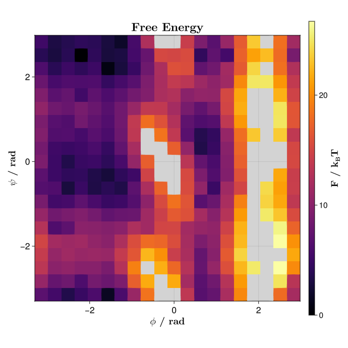
The convergence plot uses tss_state.stats.max_abs_delta_f, the maximum absolute reported free energy update at each logged TSS iteration.
deltaF = tss_state.stats.max_abs_delta_f
iter = tss_state.stats.iterations
fig_df = Figure(size = (720, 720))
ax_df = Axis(
fig_df[1,1],
title = L"\textbf{Max. $\Delta$F}",
xlabel = L"\textbf{Iteration}",
ylabel = L"\textbf{log_{10}($\Delta$F)}",
xlabelsize = 20, ylabelsize = 20,
titlesize = 24,
xlabelfont = :bold, ylabelfont = :bold,
xticklabelsize = 18, yticklabelsize = 18,
)
lines!(
ax_df,
iter,
log10.(deltaF);
color = :royalblue,
linewidth = 3,
linecap = :round,
joinstyle = :round,
label = "PHI/PSI TSS",
)
axislegend(position = :rt, labelsize = 24)
display(fig_df)
save("tss_dipeptide_convergence.png", fig_df)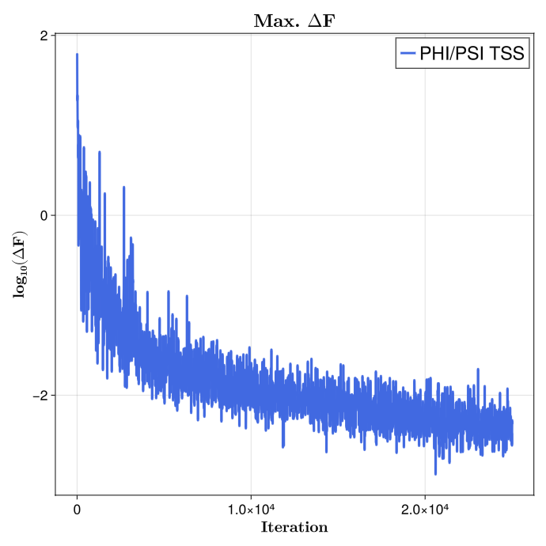
The script also saves a normalized histogram of the visited TSS thermodynamic states. With multiple replicas, the histogram combines the state histories from all replicas.
state_bins = 0.5:1:(N_PHI_STATES * N_PSI_STATES + 0.5)
save_state_histogram(
tss_visited_states(tss_state),
state_bins,
"tss_dipeptide_states.png",
)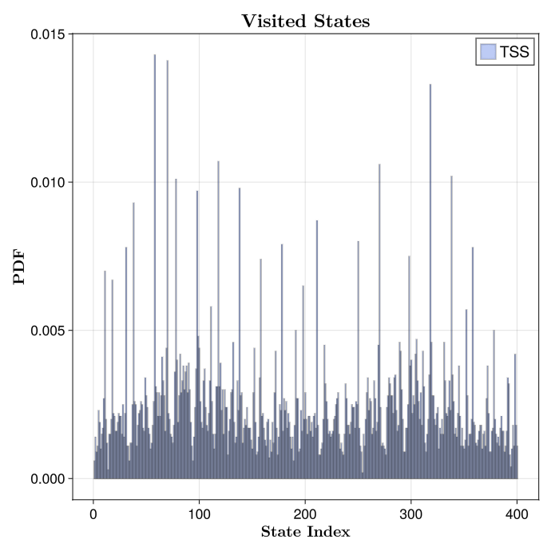
Ethanol solvation free energy
The full script is scripts/tss_solvation.jl:
julia scripts/tss_solvation.jlThis example computes the standard solvation free energy of ethanol with a two-leg annihilation cycle. The setup is completely equivalent to the AWH case described above: ethanol is annihilated in solution and in vacuum, and the two endpoint differences are combined with the analytical gas-to-solution standard-state correction. The alchemical ladder has 20 states from $\lambda=1$ to $\lambda=0$, and the solute atoms use InsertRole with DefaultLambdaScheduler.
FT = Float32
AT = CuArray
Δt = FT(4)u"fs"
T0 = FT(310)u"K"
P0 = FT(1)u"bar"
N_LAMBDA_STATES = 20
TSS_WINDOW_SIZE = 4
N_MD_STEPS = 50
SELF_ADJUSTMENT_STEPS = 5
N_REPLICAS = 4
TSS_TIME = FT(15)u"ns"
SOLVENT_EQUIL_TIME = FT(500)u"ps"
VACUUM_EQUIL_TIME = FT(100)u"ps"
lambda_schedule = FT.(range(1.0, stop = 0.0, length = N_LAMBDA_STATES))
tss_solvation_replica_rngs(seed::Integer) =
[MersenneTwister(seed + replica_i - 1) for replica_i in 1:N_REPLICAS]The setup function constructs the solvated and vacuum legs. The non-bonded treatment is chosen before alchemical states are generated: PME for the solvated leg, and short-range Coulomb with an infinite cutoff for the vacuum leg.
function setup_alchemical_tss(pdb_file, solute_indices; is_vacuum = false, rng = Random.default_rng())
nonbonded_method = is_vacuum ? :none : :pme
boundary = is_vacuum ? CubicBoundary(FT(Inf) * u"nm") : nothing
dist_cutoff = is_vacuum ? FT(Inf) * u"nm" : FT(1) * u"nm"
dist_buffer = is_vacuum ? FT(0) * u"nm" : FT(0.2) * u"nm"
neighbor_finder_type = is_vacuum ? DistanceNeighborFinder : nothing
sys_base = System(
pdb_file,
ff;
array_type = AT,
boundary = boundary,
dist_cutoff = dist_cutoff,
dist_buffer = dist_buffer,
neighbor_finder_type = neighbor_finder_type,
nonbonded_method = nonbonded_method,
constraints = :hbonds,
constraint_algorithm = LINCS,
rigid_water = true,
hydrogen_mass = 3,
)
integrator = if is_vacuum
Langevin(; dt = Δt, temperature = T0, friction = FT(1)u"ps^-1",
coupling = nothing, remove_CM_motion = 100)
else
barostat = CRescaleBarostat(P0, FT(4)u"ps"; n_steps = 200)
Langevin(dt = Δt, temperature = T0, friction = FT(1)u"ps^-1",
coupling = (barostat,), remove_CM_motion = 100)
endAfter minimization and equilibration, the script finds the standard Lennard-Jones and Coulomb interactions, replaces Lennard-Jones with a Gapsys soft-core interaction, uses a scaled Coulomb interaction, rebuilds PME and Ewald exclusion data with the same scheduler, and creates one ThermoState for each $\lambda$ value.
p_inters = sys_base.pairwise_inters
idx_lj = findfirst(x -> x isa LennardJones, p_inters)
idx_coul = findfirst(x -> x isa Union{Coulomb, CoulombEwald}, p_inters)
lj_sc = alchemical_lj_softcore(p_inters[idx_lj])
cl_scaled = alchemical_coulomb_scaled(p_inters[idx_coul])
atoms_cpu = Molly.from_device(sys_base.atoms)
thermo_states = ThermoState[]
for λ in lambda_schedule
acopy = Atom[]
for a in atoms_cpu
if a.index ∈ solute_indices
push!(acopy, Atom(a.index, a.atom_type, a.mass, a.charge,
a.σ, a.ϵ, FT(λ), Molly.InsertRole))
else
push!(acopy, Atom(a.index, a.atom_type, a.mass, a.charge,
a.σ, a.ϵ, FT(a.λ), a.alch_role))
end
end
atoms_dev = Molly.to_device([acopy...], AT)
general_inters = rebuild_alchemical_general_inters(
sys_base,
atoms_dev,
lj_sc,
cl_scaled,
)
specific_inter_lists = rebuild_alchemical_specific_inter_lists(sys_base, cl_scaled)
sys_w = System(
deepcopy(sys_base);
atoms = atoms_dev,
pairwise_inters = (lj_sc, cl_scaled),
general_inters = general_inters,
specific_inter_lists = specific_inter_lists,
)
push!(thermo_states, ThermoState(sys_w, deepcopy(integrator)))
endThe TSS graph is a one-dimensional non-periodic ladder. With 20 states and TSS_WINDOW_SIZE = 4, each local estimator spans four neighboring $\lambda$ states. The simulation uses four replicas and 15000 TSS cycles for a 15 ns run with this timestep and cycle definition.
tss_graph = Molly.tss_grid_graph(
(length(lambda_schedule),);
window_size = (TSS_WINDOW_SIZE,),
periodic = (false,),
)
tss_state = TSSState(
thermo_states;
graph = tss_graph,
history_forgetting = TSSHistoryForgetting(alpha = FT(0.2), n_epochs = 16),
adaptive_gamma = :covdet,
)
total_steps = Int(floor(TSS_TIME / Δt))
n_cycles = Int(floor(total_steps / (SELF_ADJUSTMENT_STEPS * N_MD_STEPS)))
first_states = N_REPLICAS == 1 ? [1] : round.(Int, range(1, length(lambda_schedule); length = N_REPLICAS))
tss_sim = TSSSimulation(
tss_state;
n_md_steps = N_MD_STEPS,
n_cycles = n_cycles,
self_adjustment_steps = SELF_ADJUSTMENT_STEPS,
n_replicas = N_REPLICAS,
first_states = first_states,
log_freq = 10,
)
return tss_state, tss_sim
endThe two legs are constructed and run independently. replica_parallel = :auto lets Molly choose a safe replica execution mode for the available hardware and array type.
tss_state_solv, tss_sim_solv = setup_alchemical_tss(
joinpath(data_dir, "ethanol_solv.pdb"),
solute_idx;
is_vacuum = false,
rng = MersenneTwister(RNG_SEED),
)
tss_state_vac, tss_sim_vac = setup_alchemical_tss(
joinpath(data_dir, "ethanol_vac.pdb"),
solute_idx;
is_vacuum = true,
rng = MersenneTwister(RNG_SEED + 1),
)
simulate!(
tss_sim_solv;
rng = MersenneTwister(RNG_SEED + 2),
replica_rngs = tss_solvation_replica_rngs(RNG_SEED + 20),
replica_parallel = :auto,
)
simulate!(
tss_sim_vac;
rng = MersenneTwister(RNG_SEED + 3),
replica_rngs = tss_solvation_replica_rngs(RNG_SEED + 40),
replica_parallel = :auto,
)After the run, tss_free_energy_uncertainties returns the reported free energies and jackknife standard errors over the retained epochs. The free energies are dimensionless, in units of $k_B T$.
jk_solv = tss_free_energy_uncertainties(tss_state_solv)
jk_vac = tss_free_energy_uncertainties(tss_state_vac)
f_solv = jk_solv.free_energies
f_vac = jk_vac.free_energies
se_solv = jk_solv.standard_errors
se_vac = jk_vac.standard_errors
dG_solv = f_solv[end] - f_solv[1]
dG_vac = f_vac[end] - f_vac[1]
V_gas = ustrip(u"nm^3", Unitful.k * T0 / P0)
V_std = ustrip(u"nm^3", 1.0u"L" / (1.0u"mol" * Unitful.Na))
dG_std_corr = log(V_gas / V_std)
dG = dG_vac - dG_solv + dG_std_corr
dG_se = hypot(se_solv[end], se_vac[end])The profile plot shows the solvent and vacuum annihilation free energies. The script reverses the $\lambda$ schedule and the estimated profiles before plotting, then draws bands spanning three jackknife standard errors.
lambda_plot = reverse(lambda_schedule)
f_solv_plot = reverse(f_solv)
f_vac_plot = reverse(f_vac)
se_solv_plot = reverse(se_solv)
se_vac_plot = reverse(se_vac)
fig_fe = Figure(size = (720, 720))
ax_fe = Axis(fig_fe[1,1],
title = L"\textbf{Alchemical Free Energy}",
xlabel = L"\textbf{\lambda}",
ylabel = L"\textbf{F / k_{B}T}",
xlabelsize = 20, ylabelsize = 20,
titlesize = 24,
xlabelfont = :bold, ylabelfont = :bold,
xticklabelsize = 18, yticklabelsize = 18,
)
lines!(
ax_fe,
lambda_plot, f_solv_plot;
color = :royalblue,
linewidth = 3,
linecap = :round,
joinstyle = :round,
label = "Solvated",
)
band!(
ax_fe,
lambda_plot,
f_solv_plot - 3 .* se_solv_plot,
f_solv_plot + 3 .* se_solv_plot;
color = :royalblue,
alpha = 0.45,
)
lines!(
ax_fe,
lambda_plot, f_vac_plot;
color = :firebrick,
linewidth = 3,
linecap = :round,
joinstyle = :round,
label = "Vacuum",
)
band!(
ax_fe,
lambda_plot,
f_vac_plot - 3 .* se_vac_plot,
f_vac_plot + 3 .* se_vac_plot;
color = :firebrick,
alpha = 0.45,
)
axislegend(position = :rt, labelsize = 24)
display(fig_fe)
save("tss_solvation_profile.png", fig_fe)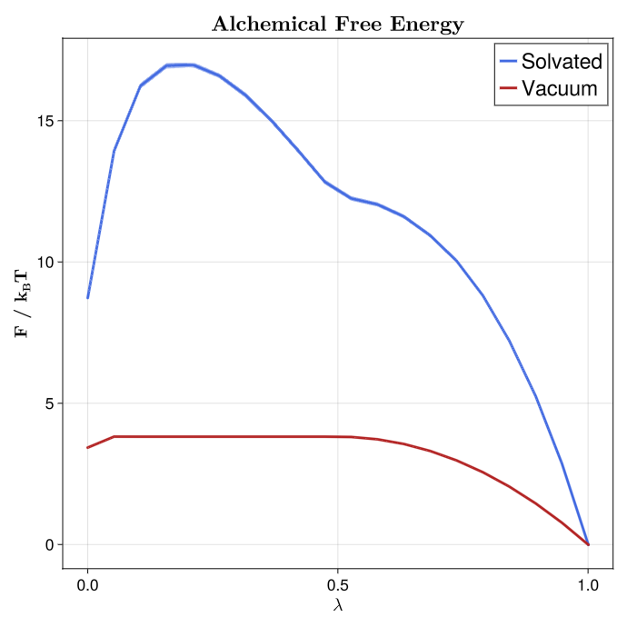
The convergence plot shows log10 of the maximum absolute reported TSS free energy update for each logged iteration.
deltaF_solv = tss_state_solv.stats.max_abs_delta_f
deltaF_vac = tss_state_vac.stats.max_abs_delta_f
iter_solv = tss_state_solv.stats.iterations
iter_vac = tss_state_vac.stats.iterations
fig_df = Figure(size = (720, 720))
ax_df = Axis(
fig_df[1,1],
title = L"\textbf{Max. $\Delta$F}",
xlabel = L"\textbf{Iteration}",
ylabel = L"\textbf{log_{10}($\Delta$F)}",
xlabelsize = 20, ylabelsize = 20,
titlesize = 24,
xlabelfont = :bold, ylabelfont = :bold,
xticklabelsize = 18, yticklabelsize = 18,
)
lines!(
ax_df,
iter_solv, log10.(deltaF_solv);
color = :royalblue,
linewidth = 3,
linecap = :round,
joinstyle = :round,
label = "Solvated",
)
lines!(
ax_df,
iter_vac, log10.(deltaF_vac);
color = :firebrick,
linewidth = 3,
linecap = :round,
joinstyle = :round,
label = "Vacuum",
)
axislegend(position = :rt, labelsize = 24)
ylims!(ax_df, -5, 0.5)
display(fig_df)
save("tss_solvation_convergence.png", fig_df)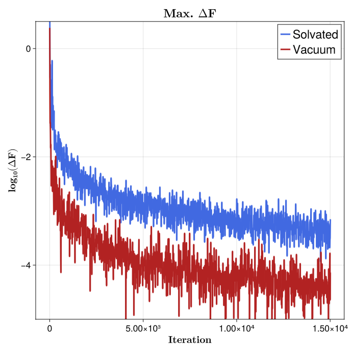
The visited-state histogram combines the state histories from all replicas in each leg, then plots the solvent and vacuum distributions together.
state_bins = 0.5:1:(N_LAMBDA_STATES + 0.5)
save_state_histogram(
[tss_visited_states(tss_state_solv), tss_visited_states(tss_state_vac)],
["Solvated", "Vacuum"],
state_bins,
"tss_solvation_states.png",
)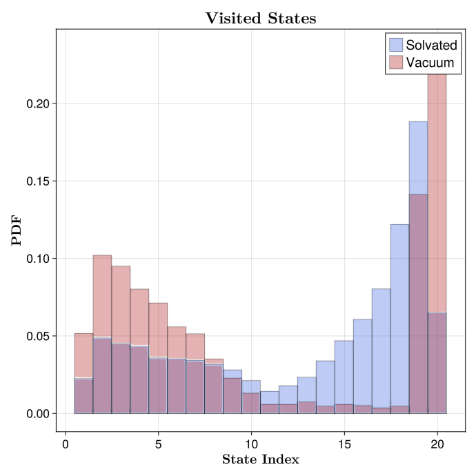
The final output reports the two annihilation free energies, the analytical standard-state correction, the solvation free energy, and the jackknife uncertainty estimate. Because the standard-state correction is analytical, the reported uncertainty only contains the TSS jackknife contribution from the two simulated legs.
beta = tss_state_solv.state_space.betas[1]
println("=========================================")
println("Annihilation in solvent (kBT): ", dG_solv)
println("Annihilation in vacuum (kBT): ", dG_vac)
println("Standard State Correction (kBT): ", dG_std_corr)
println("Solvation Free Energy (kBT): ", dG)
println("Jackknife SE, no std-state uncertainty (kBT): ", dG_se)
println("=========================================")
println("=========================================")
println("Annihilation in solvent (kJ mol^-1): ", dG_solv / beta)
println("Annihilation in vacuum (kJ mol^-1): ", dG_vac / beta)
println("Standard State Correction (kJ mol^-1): ", dG_std_corr / beta)
println("Solvation Free Energy (kJ mol^-1): ", dG / beta)
println("Jackknife SE, no std-state uncertainty (kJ mol^-1): ", dG_se / beta)
println("=========================================")A representative run prints:
=========================================
Annihilation in solvent (kBT): 8.696862
Annihilation in vacuum (kBT): 3.4346604
Standard State Correction (kBT): 3.249398594044294
Solvation Free Energy (kBT): -2.012803191996966
Jackknife SE, no std-state uncertainty (kBT): 0.072397865
=========================================
=========================================
Annihilation in solvent (kJ mol^-1): 22.416018
Annihilation in vacuum (kJ mol^-1): 8.85278
Standard State Correction (kJ mol^-1): 8.375271054356045
Solvation Free Energy (kJ mol^-1): -5.187966888071426
Jackknife SE, no std-state uncertainty (kJ mol^-1): 0.1866043
=========================================